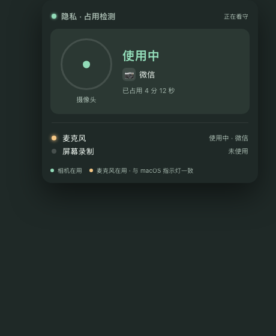
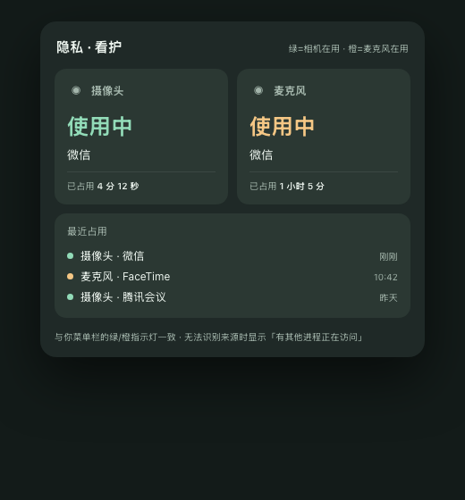
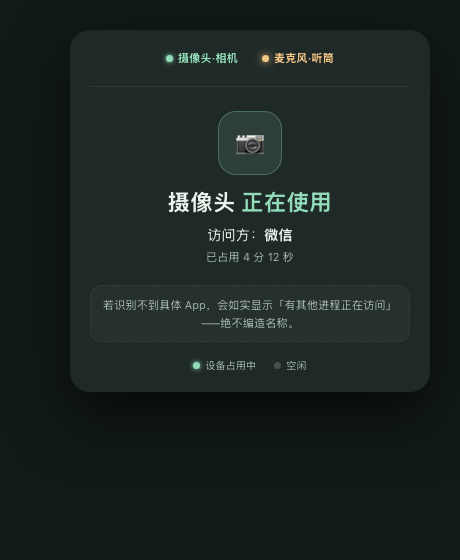

方向一 · 克制单卡
极简 · 一眼开关左状态灯+右状态，摄像头为主卡，麦克风/屏幕录制做次级行。胆量：只用一个强调色，其他全部弱化。

方向二 · 双卡对开
对称 · 信息全摄像头/麦克风左右对开两块卡，各带状态+进程+时长，下方「最近占用」时间线。胆量：双设备对称 + 历史记录。

方向三 · 居中强调
通知式 · 单次强调像 macOS 通知一样一次突出一种「设备被访问」，大图标+访问方。胆量：一次只讲一件事，最像 OverSight。